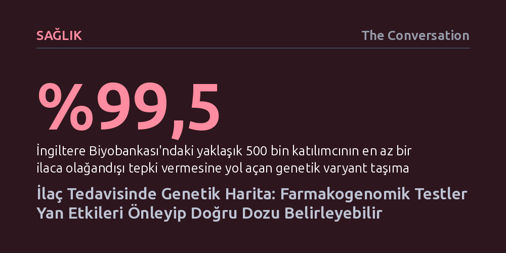

SAGLIK · The Conversation · 2026-09-12
Neredeyse herkes ilaçların vücuttaki etkisini değiştiren genetik varyantlar taşıyor ve bu farklılıklar her altı hastane yatışından birine yol açan yan etkilerin temel nedenleri arasında yer alıyor. Genetik test rehberliğinde yazılan reçeteler, klinik açıdan ciddi yan etki riskini belirgin biçimde düşürüyor.
Aynı ilacın farklı insanlarda şifa ya da zehir olmasının şans değil, ömür boyu saklanabilecek tek bir genetik testle öngörülebilir bir biyolojik uyumsuzluk olduğunu gösteriyor.

İki hastaya aynı teşhisle aynı dozda ilaç verilmesine rağmen birinin hızla iyileşip diğerinin ağır yan etkilerle boğuşması tıbbın en eski açmazlarından biridir. Çoğu zaman yaş, beslenme veya böbrek fonksiyonlarıyla açıklanmaya çalışılan bu uçurumun ardında aslında sessiz bir genetik kod yatar. Farmakogenomik, vücudumuzdaki proteinlerin ilaçları nasıl parçaladığını ya da ilacın hedef dokuya nasıl etki ettiğini doğrudan DNA haritamıza bakarak anlamamızı sağlar.
Sorunun büyüklüğü münferit vakaların çok ötesindedir. İngiltere Biyobankası kapsamındaki yaklaşık 500 bin kişilik veri tabanında yapılan incelemeler, katılımcıların yüzde 99,5 gibi çarpıcı bir bölümünün iyi bilinen 14 gendeki varyantlar nedeniyle en az bir ilaca sıra dışı tepki verme eğiliminde olduğunu gösterdi. Üstelik bu kişilerin neredeyse dörtte biri, söz konusu genlerin doğrudan etkilediği bir ilacı geçmişte halihazırda kullanmıştı.
Bu genetik uyumsuzlukların sağlık sistemine getirdiği maliyet de oldukça ağırdır. Liverpool'daki bir hastane merkezinde yapılan çalışma, yetişkin hasta kabullerinin yüzde 16,5'inin doğrudan ilaç yan etkileriyle ilişkili olduğunu ortaya koydu. İngiltere geneline uyarlandığında yalnızca bu önlenebilir yatışların yıllık maliyetinin 2,2 milyar sterlini aştığı tahmin ediliyor. Özellikle birden fazla ilaç kullanan yaşlı nüfus için bu tablo hayati bir risk anlamına geliyor.
Bir genetik varyanta sahip olmak tek başına anlam ifade etmez; asıl değer, hastaya yazılacak ilacın bu varyantla doğrudan ilişkili olması ve hekimin elinde dozu ya da ilacı değiştirecek net bir klinik kılavuz bulunmasıyla ortaya çıkar. Genetik testler, hastayı haftalarca deneme yanılma sürecine mahkûm etmek yerine, en baştan güvenli ve etkili ilacın seçilmesini mümkün kılar.
Bu yaklaşımın başarısı somut verilerle kanıtlanmış durumdadır. Yedi Avrupa ülkesinde yaklaşık 7 bin hastayla yürütülen geniş çaplı bir klinik araştırma, reçetelerin 12 genden oluşan bir panele göre düzenlenmesinin sonuçlarını inceledi. Tedavisi genetik test sonuçlarına göre şekillendirilen grupta klinik olarak anlamlı yan etki görülme oranı yüzde 21'de kalırken, standart bakım alan kontrol grubunda bu oran yüzde 27,7 olarak kaydedildi.
Aslında sistem bazı kritik tedavilerde uzun süredir devrededir. Örneğin belirli kemoterapi ilaçlarından önce DPYD genine bakılarak ilacın vücutta birikip zehirlenmeye yol açması engellenir. Benzer biçimde, HIV tedavisinde kullanılan abakavir etken maddeli ilaç verilmeden önce HLA-B bağışıklık geninin taranması, hastayı şiddetli aşırı duyarlılık reaksiyonlarından korur.
Farmakogenomiğin sunduğu avantajları somutlaştırmak için kalp krizi geçirip taburcu olan bir hastayı düşünelim. Bu hastaya genellikle pıhtılaşmayı önlemek için klopidogrel, kolesterolü kontrol altında tutmak için bir statin ve mideyi korumak için omeprazol reçete edilir. İlk bakışta rutin görünen bu kombinasyon, genetik yapıya bağlı olarak ciddi riskler barındırabilir.
Örneğin nüfusun önemli bir kısmında bulunan CYP2C19 geni varyantları, klopidogrelin vücutta aktif hale gelmesini engeller; bu durumda hasta ilacı düzenli içse bile yeni bir pıhtı ve damar tıkanıklığı riskiyle karşı karşıya kalır. Aynı varyant mide koruyucu omeprazolün kandaki yoğunluğunu da değiştirirken, farklı genetik varyasyonlar statinlerin kaslarda şiddetli ağrı yaratma riskini artırır. Hekim tek bir panel testiyle hastanın bu tablodaki yatkınlığını gördüğünde, klopidogrel yerine alternatif bir pıhtı önleyici seçebilir ve doz ayarlamasını güvenle yapabilir.
Benzer bir durum psikiyatri pratiğinde de geçerlidir. Antidepresanların vücuttaki metabolizma hızı CYP2D6 ve CYP2C19 genleri tarafından belirlenir. İlacı çok yavaş parçalayan bir bünyede standart doz hızla toksik seviyelere ulaşabilirken, aşırı hızlı parçalayan bir hastada hiçbir iyileşme sağlanamaz. Genetik veri, psikiyatristin doğru başlangıç dozunu ilk günden belirlemesine yardımcı olur.
Farmakogenomik testlerin en pratik yönü, DNA diziliminin ömür boyu sabit kalmasıdır. Basit bir kan örneği ya da yanak içi sürüntüsüyle bir kez yapılan test, hastanın elektronik sağlık dosyasına ömür boyu başvurulacak bir referans olarak kaydedilebilir. Tıpkı Hollanda'da olduğu gibi, hekim reçete yazarken sistemin otomatik olarak genetik veriyi tarayıp uyarı vermesi tıp pratiğinde radikal bir dönüşüm vadeder.
Ancak bu dönüşümün önünde aşılması gereken aşamalar vardır. Genetik farklılıklar ilaç yanıtının yalnızca bir kısmını açıklar; hastanın böbrek sağlığı, yaşı ve kullandığı diğer ilaçlar hekimin klinik muhakemesini gerektirmeye devam edecektir. Ayrıca bu testlere kimlerin öncelikli olarak erişeceği, sağlık sistemlerindeki adil dağıtım açısından planlama gerektirmektedir.
Sonuç olarak tıp dünyası artık testlerin yapılabilirliğini değil, bunların sağlık sistemine nasıl entegre edileceğini tartışmaktadır. Önümüzdeki asıl mesele, reçete yazan hekimlerin eğitimi, güvenilir laboratuvar altyapısı ve klinik karar destek yazılımlarının rutinin bir parçası haline getirilmesidir.